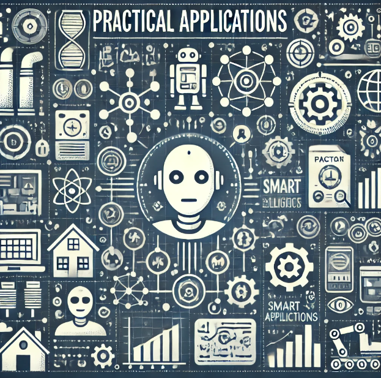

Practical Applications of AI
Learn to use AI tools in your work life to help increase productivity.
Automating Repetitive Work
AI is commonly used to automate routine, repetitive activities, thereby saving your precious time to spend on other, probably more important tasks. Examples of such tasks are:
- Entering Data and managing that data
- Scheduling and management of calendars with help of an AI assistant
- Periodical standard reports/summaries.
Productivity Improvement through AI-Generated Insights
AI processes vast amounts of data and creates insights useful to improving decisions and processes. Examples include:
- Customer data analytics for trending and preferences
- Supply chain and logistics optimization with predictive analytics
- Personalized marketing campaigns based on consumer behavior
Better Communication with AI-generated content
AI tools can create good content easily. Examples include:
- Writing emails and business documents
- Producing content for blogs and social media
- Preparing presentations and other visual content
Quick Tips to Introduce AI into Your Routine
Here are some quick tips that will help you effortlessly introduce AI into your routine:
- Start with small, easily manageable tasks for increased confidence.
- Regularly review and update your AI tools to make sure they are the best for your needs.
- Share insights and best practices with your colleagues.
Previous Module
Next Module